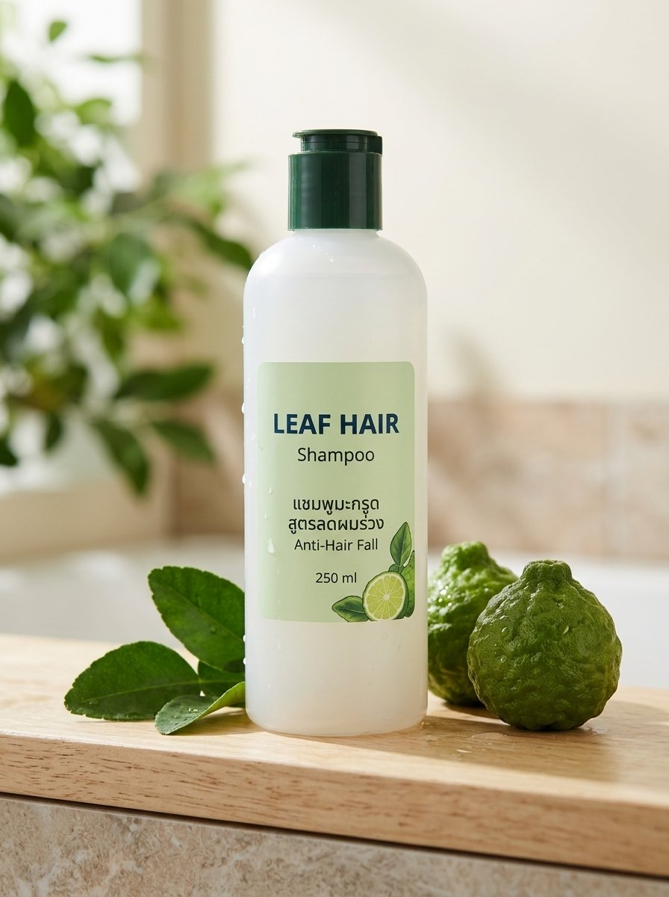

ดูแลเส้นผมด้วยพลังจากใบไม้
แชมพูสูตรธรรมชาติจากมะกรูดและว่านหางจระเข้ ให้หนังศีรษะสะอาด สบาย และเส้นผมแข็งแรง
ดูสินค้าทั้งหมด
สินค้าของเรา
เลือกสูตรที่เหมาะกับคุณ
แชมพูสูตรธรรมชาติจากมะกรูดและว่านหางจระเข้ ให้หนังศีรษะสะอาด สบาย และเส้นผมแข็งแรง
ดูสินค้าทั้งหมด
เลือกสูตรที่เหมาะกับคุณ